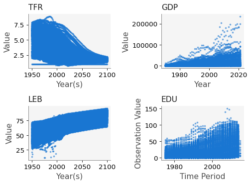
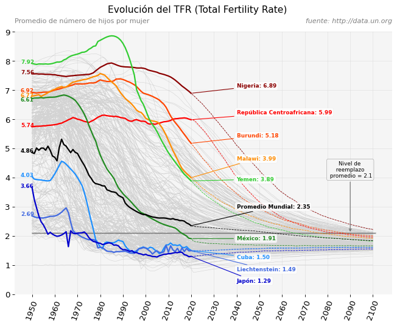
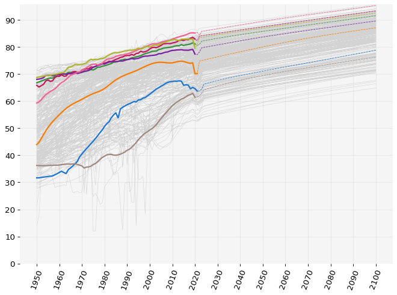
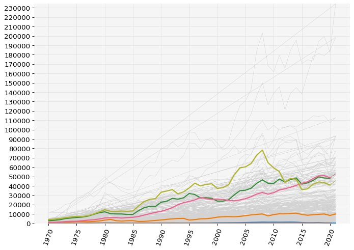
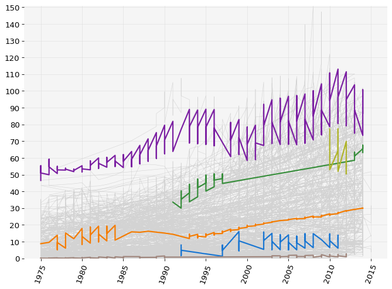
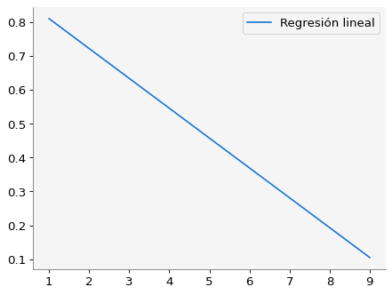
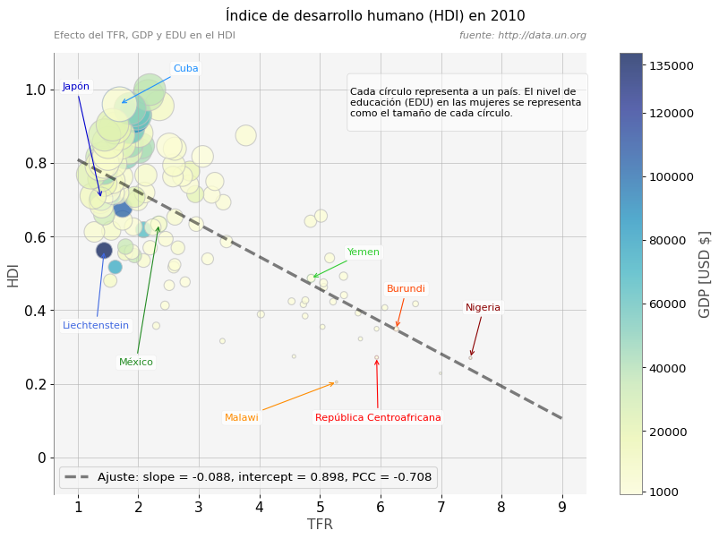

import numpy as np
import matplotlib.pyplot as plt
import pandas as pd
from math import ceil
# Esta biblioteca solo funciona en la plataforma www.macti.unam.mx
# Si no estas en esa plataforma, solo comenta la línea que sigue.
import macti.visual4 Análisis de la tasa de fertilidad total mundial
This notebook by Luis M. de la Cruz Salas is licensed under Attribution-NonCommercial-NoDerivatives 4.0 International
Para lograr una excelente visualización de datos se debe tener: mucha curiosidad e interés en muchos temas variados que pueden parecer poco relacionados entre ellos: matemáticas, demografía, epidemiología, economía, deportes, ventas por internet, historia, psicología y muchos etcéteras.
Durante el proceso de esta visualización la vida tenderá a convertirse en un caos intelectual, pero sistemático y emocionante.
La visualización de datos es muy importante, pues es posible que sea lo único que vean tus interlocutores: cliente, colega, jefe, tutor, jurado, lectores de un periódico, público en una conferencia, … y probablemente a ellos no les interese mucho los datos numéricos o los algoritmos usados en su análisis.
El público a quien deseas transmitir tus hallazgos olvidarán muy pronto los numéros; pero si introduces tus hallazgos mediante un relato que cuente la historia de los datos, es posible que ellos se lleven un buen sabor de boca y recuerden la información recibida por mucho más tiempo e incluso tomen acciones.
4.1 Objetivo
Obtener información de http://data.un.org/ de las siguientes variables:
- Tasa de fertilidad total (TFR)
- Ingreso per cápita (GDP)
- Nivel de educación (EDU)
- Esperanza de vida al nacer (LEB)
Construir una visualización que permita comparar el cambio en el Total Fertility Rate (TFR) en función del tiempo para varias países.
Generar un data set para el índice de desarrollo humano (HDI) de acuerdo con: https://en.wikipedia.org/wiki/Human_Development_Index
HeCompA - Anscombe by Luis M. de la Cruz is licensed under Attribution-ShareAlike 4.0 International


Trabajo realizado con el apoyo del Programa UNAM-DGAPA-PAPIME PE101922
5 Conjuntos de datos.
Los datos ya están en el directorio de esta notebook. Solo los leemos.
TFR = pd.read_csv('UNdata_Export_20230621_205538168.zip')
# GPD per capita
GDP = pd.read_csv('UNdata_Export_20230624_011417717.zip')
# Life expectancy at birth
LEB = pd.read_csv('UNdata_Export_20230624_013747471.zip')
# Gross enrolment ratio. Tertiary education
EDU = pd.read_csv('UNdata_Export_20230624_014454110.zip')EDU.head()| Reference Area | Time Period | Sex | Age group | Units of measurement | Observation Value | |
|---|---|---|---|---|---|---|
| 0 | Afghanistan | 2014 | Female | Not applicable | Percent | 3.67329 |
| 1 | Afghanistan | 2014 | Male | Not applicable | Percent | 13.28657 |
| 2 | Afghanistan | 2014 | All genders | Not applicable | Percent | 8.66280 |
| 3 | Afghanistan | 2011 | Female | Not applicable | Percent | 1.89233 |
| 4 | Afghanistan | 2011 | All genders | Not applicable | Percent | 3.75598 |
print(TFR.columns)
print(GDP.columns)
print(LEB.columns)
print(EDU.columns)Index(['Country or Area', 'Year(s)', 'Variant', 'Value'], dtype='object')
Index(['Country or Area', 'Year', 'Item', 'Value'], dtype='object')
Index(['Country or Area', 'Year(s)', 'Variant', 'Value'], dtype='object')
Index(['Reference Area', 'Time Period', 'Sex', 'Age group',
'Units of measurement', 'Observation Value'],
dtype='object')Agrupamos los datos por países y regiones geográficas.
TFR_group = TFR.groupby('Country or Area')
GDP_group = GDP.groupby('Country or Area')
LEB_group = LEB.groupby('Country or Area')
EDU_group = EDU.groupby('Reference Area')Determinamos los países que se tienen en cada conjunto de datos
TFR_countries = TFR_group.groups.keys()
GDP_countries = GDP_group.groups.keys()
LEB_countries = LEB_group.groups.keys()
EDU_countries = EDU_group.groups.keys()print(len(TFR_countries))
print(len(GDP_countries))
print(len(LEB_countries))
print(len(EDU_countries))284
220
284
220print(TFR_countries)dict_keys(['Afghanistan', 'Africa', 'Albania', 'Algeria', 'American Samoa', 'Andorra', 'Angola', 'Anguilla', 'Antigua and Barbuda', 'Argentina', 'Armenia', 'Aruba', 'Asia', 'Australia', 'Australia/New Zealand', 'Austria', 'Azerbaijan', 'Bahamas', 'Bahrain', 'Bangladesh', 'Barbados', 'Belarus', 'Belgium', 'Belize', 'Benin', 'Bermuda', 'Bhutan', 'Bolivia (Plurinational State of)', 'Bonaire, Sint Eustatius and Saba', 'Bosnia and Herzegovina', 'Botswana', 'Brazil', 'British Virgin Islands', 'Brunei Darussalam', 'Bulgaria', 'Burkina Faso', 'Burundi', 'Cabo Verde', 'Cambodia', 'Cameroon', 'Canada', 'Caribbean', 'Cayman Islands', 'Central African Republic', 'Central America', 'Central Asia', 'Central and Southern Asia', 'Chad', 'Chile', 'China', 'China, Hong Kong SAR', 'China, Macao SAR', 'Colombia', 'Comoros', 'Congo', 'Cook Islands', 'Costa Rica', 'Croatia', 'Cuba', 'Curaçao', 'Cyprus', 'Czechia', "Côte d'Ivoire", "Dem. People's Republic of Korea", 'Democratic Republic of the Congo', 'Denmark', 'Djibouti', 'Dominica', 'Dominican Republic', 'Eastern Africa', 'Eastern Asia', 'Eastern Europe', 'Eastern and South-Eastern Asia', 'Ecuador', 'Egypt', 'El Salvador', 'Equatorial Guinea', 'Eritrea', 'Estonia', 'Eswatini', 'Ethiopia', 'Europe', 'Europe and Northern America', 'Falkland Islands (Malvinas)', 'Faroe Islands', 'Fiji', 'Finland', 'France', 'French Guiana', 'French Polynesia', 'Gabon', 'Gambia', 'Georgia', 'Germany', 'Ghana', 'Gibraltar', 'Greece', 'Greenland', 'Grenada', 'Guadeloupe', 'Guam', 'Guatemala', 'Guernsey', 'Guinea', 'Guinea-Bissau', 'Guyana', 'Haiti', 'High-income countries', 'Holy See', 'Honduras', 'Hungary', 'Iceland', 'India', 'Indonesia', 'Iran (Islamic Republic of)', 'Iraq', 'Ireland', 'Isle of Man', 'Israel', 'Italy', 'Jamaica', 'Japan', 'Jersey', 'Jordan', 'Kazakhstan', 'Kenya', 'Kiribati', 'Kosovo (under UNSC res. 1244)', 'Kuwait', 'Kyrgyzstan', 'Land-locked Developing Countries (LLDC)', "Lao People's Democratic Republic", 'Latin America and the Caribbean', 'Latvia', 'Least developed countries', 'Lebanon', 'Lesotho', 'Less developed regions', 'Less developed regions, excluding China', 'Less developed regions, excluding least developed countries', 'Liberia', 'Libya', 'Liechtenstein', 'Lithuania', 'Low-income countries', 'Lower-middle-income countries', 'Luxembourg', 'Madagascar', 'Malawi', 'Malaysia', 'Maldives', 'Mali', 'Malta', 'Marshall Islands', 'Martinique', 'Mauritania', 'Mauritius', 'Mayotte', 'Melanesia', 'Mexico', 'Micronesia', 'Micronesia (Fed. States of)', 'Middle Africa', 'Middle-income countries', 'Monaco', 'Mongolia', 'Montenegro', 'Montserrat', 'More developed regions', 'Morocco', 'Mozambique', 'Myanmar', 'Namibia', 'Nauru', 'Nepal', 'Netherlands', 'New Caledonia', 'New Zealand', 'Nicaragua', 'Niger', 'Nigeria', 'Niue', 'No income group available', 'North Macedonia', 'Northern Africa', 'Northern Africa and Western Asia', 'Northern America', 'Northern Europe', 'Northern Mariana Islands', 'Norway', 'Oceania', 'Oceania (excluding Australia and New Zealand)', 'Oman', 'Other non-specified areas', 'Pakistan', 'Palau', 'Panama', 'Papua New Guinea', 'Paraguay', 'Peru', 'Philippines', 'Poland', 'Polynesia', 'Portugal', 'Puerto Rico', 'Qatar', 'Republic of Korea', 'Republic of Moldova', 'Romania', 'Russian Federation', 'Rwanda', 'Réunion', 'Saint Barthélemy', 'Saint Helena', 'Saint Kitts and Nevis', 'Saint Lucia', 'Saint Martin (French part)', 'Saint Pierre and Miquelon', 'Saint Vincent and the Grenadines', 'Samoa', 'San Marino', 'Sao Tome and Principe', 'Saudi Arabia', 'Senegal', 'Serbia', 'Seychelles', 'Sierra Leone', 'Singapore', 'Sint Maarten (Dutch part)', 'Slovakia', 'Slovenia', 'Small Island Developing States (SIDS)', 'Solomon Islands', 'Somalia', 'South Africa', 'South America', 'South Sudan', 'South-Eastern Asia', 'Southern Africa', 'Southern Asia', 'Southern Europe', 'Spain', 'Sri Lanka', 'State of Palestine', 'Sub-Saharan Africa', 'Sudan', 'Suriname', 'Sweden', 'Switzerland', 'Syrian Arab Republic', 'Tajikistan', 'Thailand', 'Timor-Leste', 'Togo', 'Tokelau', 'Tonga', 'Trinidad and Tobago', 'Tunisia', 'Turkmenistan', 'Turks and Caicos Islands', 'Tuvalu', 'Türkiye', 'Uganda', 'Ukraine', 'United Arab Emirates', 'United Kingdom', 'United Republic of Tanzania', 'United States Virgin Islands', 'United States of America', 'Upper-middle-income countries', 'Uruguay', 'Uzbekistan', 'Vanuatu', 'Venezuela (Bolivarian Republic of)', 'Viet Nam', 'Wallis and Futuna Islands', 'Western Africa', 'Western Asia', 'Western Europe', 'Western Sahara', 'World', 'Yemen', 'Zambia', 'Zimbabwe'])Determinamos los países que son comunes a todos los conjuntos de datos.
filtra_GDP = lambda p: p in GDP_countries
filtra_LEB = lambda p: p in LEB_countries
filtra_EDU = lambda p: p in EDU_countrieslen(list(filter(filtra_EDU, list(filter(filtra_GDP, list(filter(filtra_LEB, TFR_countries)))))))181countries = list(filter(filtra_EDU, list(filter(filtra_GDP, list(filter(filtra_LEB, TFR_countries))))))print(countries)['Afghanistan', 'Albania', 'Algeria', 'Angola', 'Anguilla', 'Antigua and Barbuda', 'Argentina', 'Armenia', 'Aruba', 'Australia', 'Austria', 'Azerbaijan', 'Bahamas', 'Bahrain', 'Bangladesh', 'Barbados', 'Belarus', 'Belgium', 'Belize', 'Benin', 'Bermuda', 'Bhutan', 'Bosnia and Herzegovina', 'Botswana', 'Brazil', 'British Virgin Islands', 'Brunei Darussalam', 'Bulgaria', 'Burkina Faso', 'Burundi', 'Cambodia', 'Cameroon', 'Canada', 'Central African Republic', 'Chad', 'Chile', 'Colombia', 'Comoros', 'Congo', 'Cook Islands', 'Costa Rica', 'Croatia', 'Cuba', 'Cyprus', 'Democratic Republic of the Congo', 'Denmark', 'Djibouti', 'Dominica', 'Dominican Republic', 'Ecuador', 'Egypt', 'El Salvador', 'Equatorial Guinea', 'Eritrea', 'Estonia', 'Ethiopia', 'Fiji', 'Finland', 'France', 'Gabon', 'Gambia', 'Georgia', 'Germany', 'Ghana', 'Greece', 'Grenada', 'Guatemala', 'Guinea', 'Guinea-Bissau', 'Guyana', 'Haiti', 'Honduras', 'Hungary', 'Iceland', 'India', 'Indonesia', 'Iraq', 'Ireland', 'Israel', 'Italy', 'Jamaica', 'Japan', 'Jordan', 'Kazakhstan', 'Kenya', 'Kiribati', 'Kuwait', 'Kyrgyzstan', "Lao People's Democratic Republic", 'Latvia', 'Lebanon', 'Lesotho', 'Liberia', 'Liechtenstein', 'Lithuania', 'Luxembourg', 'Madagascar', 'Malawi', 'Malaysia', 'Maldives', 'Mali', 'Malta', 'Marshall Islands', 'Mauritania', 'Mauritius', 'Mexico', 'Monaco', 'Mongolia', 'Montenegro', 'Montserrat', 'Morocco', 'Mozambique', 'Myanmar', 'Namibia', 'Nauru', 'Nepal', 'Netherlands', 'New Zealand', 'Nicaragua', 'Niger', 'Nigeria', 'Norway', 'Oman', 'Pakistan', 'Palau', 'Panama', 'Papua New Guinea', 'Paraguay', 'Peru', 'Philippines', 'Poland', 'Portugal', 'Puerto Rico', 'Qatar', 'Republic of Korea', 'Romania', 'Russian Federation', 'Rwanda', 'Saint Kitts and Nevis', 'Saint Lucia', 'Saint Vincent and the Grenadines', 'Samoa', 'San Marino', 'Sao Tome and Principe', 'Saudi Arabia', 'Senegal', 'Serbia', 'Seychelles', 'Sierra Leone', 'Slovakia', 'Slovenia', 'Solomon Islands', 'Somalia', 'South Africa', 'Spain', 'Sri Lanka', 'Sudan', 'Suriname', 'Sweden', 'Switzerland', 'Syrian Arab Republic', 'Tajikistan', 'Thailand', 'Timor-Leste', 'Togo', 'Tonga', 'Trinidad and Tobago', 'Tunisia', 'Turkmenistan', 'Tuvalu', 'Uganda', 'Ukraine', 'United Arab Emirates', 'Uruguay', 'Uzbekistan', 'Vanuatu', 'Venezuela (Bolivarian Republic of)', 'Viet Nam', 'Yemen', 'Zambia', 'Zimbabwe']Determinamos los años para el caso del TFR.
years = list(TFR_group.get_group('Afghanistan')['Year(s)'])
print(years)[2101, 2100, 2099, 2098, 2097, 2096, 2095, 2094, 2093, 2092, 2091, 2090, 2089, 2088, 2087, 2086, 2085, 2084, 2083, 2082, 2081, 2080, 2079, 2078, 2077, 2076, 2075, 2074, 2073, 2072, 2071, 2070, 2069, 2068, 2067, 2066, 2065, 2064, 2063, 2062, 2061, 2060, 2059, 2058, 2057, 2056, 2055, 2054, 2053, 2052, 2051, 2050, 2049, 2048, 2047, 2046, 2045, 2044, 2043, 2042, 2041, 2040, 2039, 2038, 2037, 2036, 2035, 2034, 2033, 2032, 2031, 2030, 2029, 2028, 2027, 2026, 2025, 2024, 2023, 2022, 2021, 2020, 2019, 2018, 2017, 2016, 2015, 2014, 2013, 2012, 2011, 2010, 2009, 2008, 2007, 2006, 2005, 2004, 2003, 2002, 2001, 2000, 1999, 1998, 1997, 1996, 1995, 1994, 1993, 1992, 1991, 1990, 1989, 1988, 1987, 1986, 1985, 1984, 1983, 1982, 1981, 1980, 1979, 1978, 1977, 1976, 1975, 1974, 1973, 1972, 1971, 1970, 1969, 1968, 1967, 1966, 1965, 1964, 1963, 1962, 1961, 1960, 1959, 1958, 1957, 1956, 1955, 1954, 1953, 1952, 1951, 1950]5.1 Visualización exploratoria.
ax1 = plt.subplot(221)
TFR.plot(x='Year(s)', y='Value', kind='scatter', marker='.', fc='C0', alpha=0.5, ax=ax1)
ax1.set_title('TFR')
ax2 = plt.subplot(222)
GDP.plot(x='Year', y='Value', kind='scatter', marker='.', fc='C1', alpha=0.5, ax=ax2)
ax2.set_title('GDP')
ax3 = plt.subplot(223)
LEB.plot(x='Year(s)', y='Value', kind='scatter', marker='.', fc='C2', alpha=0.5, ax=ax3)
ax3.set_title('LEB')
ax4 = plt.subplot(224)
EDU.plot(x='Time Period', y='Observation Value', kind='scatter', marker='.', fc='C3', alpha=0.5, ax=ax4)
ax4.set_title('EDU')
plt.tight_layout()
plt.savefig('TFR_01.png', dpi=300)
plt.show()
5.2 Visualización del TFR.
Las siguientes funciones son de utilidad para la visualización final.
from math import ceil
def maxmin(data, time, value, country):
"""
Calcula el valor máximo y el mínimo de todos los países.
Parameters
----------
data : DataFrame
Dataframe con la información de los países.
time: str
Nombre de la columna con la información de los años.
value: str
Nombre de la columna con la información de los datos.
country: str
Nombre de la columna con los nombres de los países.
Returns
-------
p_max, y_max, p_min, y_min, yticks
"""
# Se obtiene el valor máximo del time
x_max = data[time].max()
x_min = data[time].min()
# Se obtiene el valor máximo del value
y_max = data[value].max()
# Extrae el nombre del país con el valor máximo
p_max = data[data[value] == y_max].iloc[0][country]
# Se obtiene el valor mínimo
y_min = data[value].min()
# Extrae el nombre del país con el valor mínimo
p_min = data[data[value] == y_min].iloc[0][country]
return p_max, y_max, p_min, y_min, x_min, x_max
def set_canvas(data, time, value, country, figsize, xstep=10, ystep = 1):
"""
Genera un lienzo para crear las gráficas sobre él.
Parameters
----------
data : DataFrame
Dataframe con la información de los países.
time: str
Nombre de la columna con la información de los años.
value: str
Nombre de la columna con la información de los datos.
country: str
Nombre de la columna con los nombres de los países.
figsize: tuple
Tamaño de la figura.
xstep, ystep: int
Paso de los ticks en los ejes horizontal y vertical, respectivamente.
Returns
-------
fig, ax:
Figura y ejes donde se hará la gráfica.
"""
p_max, y_max, p_min, y_min, x_min, x_max = maxmin(data, time, value, country)
print('Máximo = {}, \t País : {}'.format(y_max, p_max))
print('Mínimo = {}, \t País : {}'.format(y_min, p_min))
# Se generan los yticks
yticks = [i for i in range(0, ceil(y_max)+1, ystep)]
fig = plt.figure(figsize=figsize)
ax = plt.gca()
if not data.empty:
data.plot(x=time, y=value, color='lightgray', rot = 70, xlabel='', lw = 0.5, ax = ax, label='', legend=False)
ax.spines.top.set_visible(False)
ax.spines.bottom.set_visible(False)
ax.spines.left.set_visible(False)
ax.spines.right.set_visible(False)
ax.set_ylim(y_min,y_max)
ax.set_yticks(yticks)
ax.set_xticks([a for a in range(x_min, x_max+1, xstep)])
ax.grid(lw=0.5, color='gainsboro')
return fig, ax
def plot_country(ax, country, time='Year(s)', value = 'Value', color='gray', label='', maxim = 2021, ):
"""
Dibuja la curva de un país.
Parameters
----------
ax : Axis
Ejes donde se hará el gráfico.
time: str
Nombre de la columna con la información de los años.
value: str
Nombre de la columna con la información de los datos.
country: str
Nombre de la columna con los nombres de los países.
color: str
Color de la curva.
label: str
Etiqueta para la curva.
maxim:
Límite para graficar una línea continua, a partir de este
límite se dibuja la línea punteada.
"""
x = country[time][country[time]>=maxim-1]
y = country[value][country[time]>=maxim-1]
ax.plot(x, y, c=color, ls = '--', lw = 0.75)
x = country[time][country[time]<maxim]
y = country[value][country[time]<maxim]
ax.plot(x, y, c=color, ls = '-', lw = 2.0, label=label)
TFR_group.get_group('Yemen').dropna()| Country or Area | Year(s) | Variant | Value | |
|---|---|---|---|---|
| 43017 | Yemen | 2100 | Medium | 1.8205 |
| 43018 | Yemen | 2099 | Medium | 1.8224 |
| 43019 | Yemen | 2098 | Medium | 1.8230 |
| 43020 | Yemen | 2097 | Medium | 1.8345 |
| 43021 | Yemen | 2096 | Medium | 1.8387 |
| ... | ... | ... | ... | ... |
| 43163 | Yemen | 1954 | Medium | 7.8979 |
| 43164 | Yemen | 1953 | Medium | 7.8988 |
| 43165 | Yemen | 1952 | Medium | 7.8836 |
| 43166 | Yemen | 1951 | Medium | 7.8959 |
| 43167 | Yemen | 1950 | Medium | 7.9156 |
151 rows × 4 columns
fig, ax = set_canvas(TFR, 'Year(s)', 'Value', 'Country or Area', (10,7))
ax.plot([years[-1], years[0]],[2.1,2.1], c='dimgray', ls = 'solid', lw=0.75)
ax.plot([years[-1], years[0]],[2.1,2.1], c='dimgray', ls = 'solid', alpha=0.25, lw=2.75)
ax.set_title('Promedio de número de hijos por mujer', loc='left', color='gray', fontsize=10)
ax.set_title('fuente: http://data.un.org', loc='right', color='gray', fontstyle='italic', fontsize=10)
plt.suptitle('Evolución del TFR (Total Fertility Rate)', y = 0.96, color='black', fontsize=14)
ax.annotate('Nivel de \n reemplazo \n promedio = 2.1',
xy=(2090, 2.095), xytext=(2090, 4.0),
bbox=dict(boxstyle='round', facecolor='whitesmoke', edgecolor='gray', alpha=0.75, linewidth=0.5),
arrowprops=dict(arrowstyle='->', facecolor='dimgray', edgecolor='dimgray'),
fontsize=8, color='black', horizontalalignment='center')
c_to_plot = [('Niger', 'Nigeria', 'darkred'),
('Central African Republic', 'República Centroafricana', 'red'),
('Burundi', 'Burundi', 'orangered'),
('Malawi', 'Malawi', 'darkorange'),
('Yemen', 'Yemen', 'limegreen'),
('Mexico', 'México', 'forestgreen'),
('Cuba', 'Cuba', 'dodgerblue'),
('Liechtenstein', 'Liechtenstein', 'royalblue'),
('Japan', 'Japón', 'mediumblue'),
('World', 'Promedio Mundial', 'black'),
# ('Mongolia', 'Mongolia', 'darkorange'),
# ('India','India','limegreen'),
# ('United States of America', 'USA', 'deepskyblue'),
# ('China', 'China', 'mediumblue'),
# ('Spain','España','purple'),
# ('Republic of Korea', 'Corea del sur', 'crimson'),
# ('Holy See', 'Ciudad del Vaticano', 'olivedrab'),
]
for c in c_to_plot:
c_tfr = TFR_group.get_group(c[0]).dropna()
plot_country(ax, c_tfr, color=c[2])
ytext = c_tfr['Value'][c_tfr['Year(s)'] == 2020].values[0]
ytext_i = c_tfr['Value'][c_tfr['Year(s)'] == 1950].values[0]
if c[0] == 'Mexico':
ytext_i -= 0.1
if c[0] == 'Malawi':
ytext_i -= 0.03
plt.text(1945, ytext_i, "{:.2f}".format(ytext_i), color = c[2], fontsize=8, fontweight='bold')
xy_x = 2020
xytext_x = 2040
if c[0] == 'World':
yoff = 0.6
elif c[0] == 'Mongolia':
yoff = 0.6
elif c[0] == 'India':
yoff = 0.4
elif c[0] == 'United States of America':
yoff = -0.2
elif c[0] == 'Republic of Korea':
yoff = -0.7
elif c[0] == 'Mexico':
yoff = -0.05
elif c[0] == 'Malawi':
yoff = 0.6
elif c[0] == 'Yemen':
yoff = 0.0
elif c[0] == 'Japan':
yoff = -0.9
elif c[0] == 'Cuba':
yoff = -0.3
elif c[0] == 'Liechtenstein':
yoff = -0.7
elif c[0] == 'Holy See':
xy_x = 1980
xytext_x = 1965
yoff = -0.5
else:
yoff = 0.2
plt.annotate(c[1]+": {:.2f}".format(ytext), xy = (xy_x, ytext), xytext = (xytext_x, ytext+yoff),
color = c[2], fontsize=8, fontweight='bold',
bbox=dict(boxstyle='round', fc='white', ec='gainsboro', alpha=0.75, linewidth=0.25),
arrowprops=dict(arrowstyle='-', color=c[2]))
plt.savefig('TFR.png', dpi=300)
plt.show()Máximo = 8.8637, País : Yemen
Mínimo = 0.7455, País : China, Hong Kong SAR
5.3 Exploración de los otros datos.
fig, ax = set_canvas(LEB, 'Year(s)', 'Value', 'Country or Area', (10,7), ystep=10)
plot_country(ax, LEB_group.get_group('Yemen').dropna(), color='C0', label='Yemen', maxim=2022)
plot_country(ax, LEB_group.get_group('Mexico').dropna(), color='C1', label='México', maxim=2022)
plot_country(ax, LEB_group.get_group('Germany').dropna(), color='C2', label='Alemania')
plot_country(ax, LEB_group.get_group('Holy See').dropna(), color='C3', label='El Baticano')
plot_country(ax, LEB_group.get_group('United States of America').dropna(), color='C4', label='USA')
plot_country(ax, LEB_group.get_group('Niger').dropna(), color='C5', label='Nigeria')
plot_country(ax, LEB_group.get_group('China, Hong Kong SAR').dropna(), color='C6', label='Hong Kong')
plot_country(ax, LEB_group.get_group('San Marino').dropna(), color='C8', label='San Marino')Máximo = 95.7552, País : Monaco
Mínimo = 11.9951, País : Cambodia
maxmin(GDP, 'Year', 'Value', 'Country or Area')('Monaco', 234317.084818276, 'Viet Nam', 34.1125600868106, 1970, 2021)fig, ax = set_canvas(GDP, 'Year', 'Value', 'Country or Area', (10,7), xstep=5, ystep=10000)
plot_country(ax, GDP_group.get_group('Yemen').dropna(), time = 'Year', color='C0', label='Yemen', maxim=2022)
plot_country(ax, GDP_group.get_group('Mexico').dropna(), time = 'Year', color='C1', label='México', maxim=2022)
plot_country(ax, GDP_group.get_group('Germany').dropna(), time = 'Year', color='C2', label='Alemania')
#plot_country(ax, GDP_group.get_group('Holy See').dropna(), time = 'Year', color='C3', label='El Baticano')
#plot_country(ax, GDP_group.get_group('United States of America').dropna(), time = 'Year', color='C4', label='USA')
plot_country(ax, GDP_group.get_group('Niger').dropna(), time = 'Year', color='C5', label='Nigeria')
plot_country(ax, GDP_group.get_group('China, Hong Kong SAR').dropna(), time = 'Year', color='C6', label='Hong Kong')
plot_country(ax, GDP_group.get_group('San Marino').dropna(), time = 'Year', color='C8', label='San Marino')Máximo = 234317.084818276, País : Monaco
Mínimo = 34.1125600868106, País : Viet Nam
maxmin(EDU, 'Time Period', 'Observation Value', 'Reference Area')('Cuba', 150.70758, 'Anguilla', 0.0, 1975, 2015)fig, ax = set_canvas(EDU, 'Time Period', 'Observation Value', 'Reference Area', (10,7), xstep=5, ystep=10)
plot_country(ax, EDU_group.get_group('Yemen').dropna(), time = 'Time Period', value = 'Observation Value', color='C0', label='Yemen', maxim=2022)
plot_country(ax, EDU_group.get_group('Mexico').dropna(), time = 'Time Period', value = 'Observation Value', color='C1', label='México', maxim=2022)
plot_country(ax, EDU_group.get_group('Germany').dropna(), time = 'Time Period', value = 'Observation Value', color='C2', label='Alemania')
#plot_country(ax, EDU_group.get_group('Holy See').dropna(), time = 'Time Period', value = 'Observation Value', color='C3', label='El Baticano')
plot_country(ax, EDU_group.get_group('United States of America').dropna(), time = 'Time Period', value = 'Observation Value', color='C4', label='USA')
plot_country(ax, EDU_group.get_group('Niger').dropna(), time = 'Time Period', value = 'Observation Value', color='C5', label='Nigeria')
#plot_country(ax, EDU_group.get_group('China, Hong Kong SAR').dropna(), time = 'Time Period', value = 'Observation Value', color='C6', label='Hong Kong')
plot_country(ax, EDU_group.get_group('San Marino').dropna(), time = 'Time Period', value = 'Observation Value', color='C8', label='San Marino')Máximo = 150.70758, País : Cuba
Mínimo = 0.0, País : Anguilla
5.4 Construcción del HDI
Se extrae información para el año 2010.
countries = list(filter(filtra_EDU, list(filter(filtra_GDP, list(filter(filtra_LEB, TFR_countries))))))
tfr = pd.Series(dtype=float)
gdp = pd.Series(dtype=float)
edu = pd.Series(dtype=float)
leb = pd.Series(dtype=float)
final_countries = []
año = 2010
paises_to_remove = ['Malaysia', 'British Virgin Islands', 'Cook Islands', 'Monaco', 'Seychelles']
for p in paises_to_remove:
countries.remove(p)
for i, c in enumerate(countries):
c_g = EDU_group.get_group(c).groupby('Sex').get_group('Female')
if año in c_g['Time Period'].values:
final_countries.append(c)
edu = pd.concat([edu, c_g[c_g['Time Period'] == año]['Observation Value']])
c_g = GDP_group.get_group(c)
gdp = pd.concat([gdp, c_g[c_g['Year'] == año]['Value']])
c_g = TFR_group.get_group(c)
tfr = pd.concat([tfr, c_g[c_g['Year(s)'] == año]['Value']])
c_g = LEB_group.get_group(c)
leb = pd.concat([leb, c_g[c_g['Year(s)'] == año]['Value']])print(len(tfr), len(gdp), len(edu), len(leb))118 118 118 118Se construye el dataframe con todas las variables para los países donde se tiene información.
hdi = pd.DataFrame()
hdi['País'] = final_countries
hdi['TFR'] = list(tfr)
hdi['GDP'] = list(gdp)
hdi['EDU'] = list(edu)
hdi['LEB'] = list(leb)
hdi| País | TFR | GDP | EDU | LEB | |
|---|---|---|---|---|---|
| 0 | Albania | 1.6564 | 4052.927488 | 52.38337 | 77.9359 |
| 1 | Algeria | 2.8434 | 4493.635433 | 35.33614 | 73.8081 |
| 2 | Antigua and Barbuda | 1.7854 | 13038.258604 | 22.67580 | 76.8195 |
| 3 | Argentina | 2.3462 | 10023.206688 | 89.15845 | 75.7208 |
| 4 | Armenia | 1.5010 | 3462.399904 | 63.13266 | 73.1597 |
| ... | ... | ... | ... | ... | ... |
| 113 | Uruguay | 2.0110 | 11567.565434 | 80.32340 | 76.8580 |
| 114 | Uzbekistan | 2.4407 | 1789.707894 | 7.55595 | 69.2354 |
| 115 | Viet Nam | 1.8949 | 1631.765100 | 22.71635 | 73.5126 |
| 116 | Yemen | 4.8553 | 1179.830933 | 6.40428 | 67.2800 |
| 117 | Zimbabwe | 4.0248 | 826.676632 | 5.23100 | 50.6523 |
118 rows × 5 columns
Se agrega una columna para el HDI.
hdi['HDI'] = np.cbrt(hdi.TFR * hdi.EDU * hdi.LEB)hdi['HDI'] = hdi.HDI / hdi.HDI.max()hdi| País | TFR | GDP | EDU | LEB | HDI | |
|---|---|---|---|---|---|---|
| 0 | Albania | 1.6564 | 4052.927488 | 52.38337 | 77.9359 | 0.719815 |
| 1 | Algeria | 2.8434 | 4493.635433 | 35.33614 | 73.8081 | 0.742293 |
| 2 | Antigua and Barbuda | 1.7854 | 13038.258604 | 22.67580 | 76.8195 | 0.555621 |
| 3 | Argentina | 2.3462 | 10023.206688 | 89.15845 | 75.7208 | 0.955952 |
| 4 | Armenia | 1.5010 | 3462.399904 | 63.13266 | 73.1597 | 0.725812 |
| ... | ... | ... | ... | ... | ... | ... |
| 113 | Uruguay | 2.0110 | 11567.565434 | 80.32340 | 76.8580 | 0.881393 |
| 114 | Uzbekistan | 2.4407 | 1789.707894 | 7.55595 | 69.2354 | 0.412952 |
| 115 | Viet Nam | 1.8949 | 1631.765100 | 22.71635 | 73.5126 | 0.558836 |
| 116 | Yemen | 4.8553 | 1179.830933 | 6.40428 | 67.2800 | 0.486832 |
| 117 | Zimbabwe | 4.0248 | 826.676632 | 5.23100 | 50.6523 | 0.388894 |
118 rows × 6 columns
Se realiza una regresión lineal del HDI vs TFR.
lres = scipy.stats.linregress(hdi.TFR, hdi.HDI)
print(lres.slope, lres.intercept, lres.rvalue**2)
x = np.linspace(1,9,100)
y = lres.slope * x + lres.intercept
plt.plot(x, y, label='Regresión lineal')
plt.legend()
plt.show()-0.08804520907984292 0.8975361617317406 0.5010566535168526
Se grafica todo juntos
hdi.sort_values('EDU', inplace = True)
lista_paises = [('Niger', 'Nigeria', 'darkred'),
('Central African Republic', 'República Centroafricana', 'red'),
('Burundi', 'Burundi', 'orangered'),
('Malawi', 'Malawi', 'darkorange'),
('Yemen', 'Yemen', 'limegreen'),
('Mexico', 'México', 'forestgreen'),
('Cuba', 'Cuba', 'dodgerblue'),
('Liechtenstein', 'Liechtenstein', 'royalblue'),
('Japan', 'Japón', 'mediumblue')
]
paises_to_plot = [hdi[hdi['País'] == p[0]] for p in lista_paises]
plt.figure(figsize=(12,8))
ax = plt.subplot(111)
niv_edu = np.array(hdi['EDU']*10.0)
#gdp_val = np.array(np.log(hdi['GDP']))
gdp_val = np.array(hdi['GDP'])
scatter = ax.scatter(hdi['TFR'], hdi['HDI'], marker='o', s=niv_edu, c=gdp_val, ec='silver', cmap='YlGnBu', alpha=0.75)
ha = 'right'
for pa, cl in zip(paises_to_plot, lista_paises):
if cl[0] == 'Yemen':
xt, yt = 6., 0.55
elif cl[0] == 'Niger':
xt, yt = 8, 0.4
elif cl[0] == 'India':
xt, yt = 3.0, 0.2
elif cl[0] == 'Yemen':
xt, yt = 4.5, 1.0
elif cl[0] == 'Mexico':
xt, yt = 2.25, .25
elif cl[0] == 'Liechtenstein':
xt, yt = 0.75, 0.35
ha = 'left'
elif cl[0] == 'Burundi':
xt, yt = 6.75, 0.45
elif cl[0] == 'Central African Republic':
xt, yt = 7, 0.1
elif cl[0] == 'Malawi':
xt, yt = 4, 0.1
elif cl[0] == 'Republic of Korea':
xt, yt = 0.65, 1.05
elif cl[0] == 'Cuba':
xt, yt = 3, 1.05
else:
xt, yt = 0.75, 1.0
niv_edu = np.array(pa['EDU']*10.0)
gdp_val = np.array(np.log(pa['GDP']))
ax.scatter(pa['TFR'], pa['HDI'], marker='o', s = niv_edu, ec=cl[2], facecolor="None", alpha=0.1, zorder=15)
plt.annotate(cl[1], xy = (pa['TFR'], pa['HDI']), xytext = (xt, yt), zorder=20,
color = cl[2], fontsize=10, fontweight='normal', ha=ha,
bbox=dict(boxstyle='round', fc='white', ec='gainsboro', alpha=0.75, linewidth=0.25),
arrowprops=dict(arrowstyle='->', color=cl[2]))
ax.plot(x,y,'k--', alpha=0.5, lw=3, label='Ajuste: slope = {:0.3f}, intercept = {:0.3f}, PCC = {:0.3f}'.format(lres.slope, lres.intercept, lres.rvalue))
ax.set_xlabel('TFR')
ax.set_ylabel('HDI')
ax.set_xticks([i for i in range(1,10)], labels=[i for i in range(1,10)], fontsize=14 )
ax.set_yticks([0,0.2,0.4,0.6,0.8,1.0], labels=[0,0.2,0.4,0.6,0.8,1.0], fontsize=14)
ax.set_ylim(-0.1, 1.1)
ax.spines['bottom'].set_visible(False)
ax.grid(lw=0.5)
ax.set_title('Efecto del TFR, GDP y EDU en el HDI', loc='left', color='gray', fontsize=10)
ax.set_title('fuente: http://data.un.org', loc='right', color='gray', fontstyle='italic', fontsize=10)
plt.suptitle('Índice de desarrollo humano (HDI) en 2010', y = 0.96, color='black', fontsize=14)
texto = """
Cada círculo representa a un país. El nivel de
educación (EDU) en las mujeres se representa
como el tamaño de cada círculo.
"""
plt.text(5.5,0.9,texto, fontsize=10,bbox=dict(boxstyle='round', fc='white', ec='silver', alpha=0.5, linewidth=0.75))
plt.colorbar(mappable=scatter, label='GDP [USD $]', ticks=[1000, 20000, 40000, 60000, 80000, 100000, 120000, 135000])
plt.legend(loc='lower left', frameon=True)
plt.savefig('HDI.pdf', dpi = 300)/opt/conda/lib/python3.11/site-packages/matplotlib/text.py:1461: FutureWarning: Calling float on a single element Series is deprecated and will raise a TypeError in the future. Use float(ser.iloc[0]) instead
x = float(self.convert_xunits(x))
/opt/conda/lib/python3.11/site-packages/matplotlib/text.py:1463: FutureWarning: Calling float on a single element Series is deprecated and will raise a TypeError in the future. Use float(ser.iloc[0]) instead
y = float(self.convert_yunits(y))
/opt/conda/lib/python3.11/site-packages/matplotlib/text.py:1461: FutureWarning: Calling float on a single element Series is deprecated and will raise a TypeError in the future. Use float(ser.iloc[0]) instead
x = float(self.convert_xunits(x))
/opt/conda/lib/python3.11/site-packages/matplotlib/text.py:1463: FutureWarning: Calling float on a single element Series is deprecated and will raise a TypeError in the future. Use float(ser.iloc[0]) instead
y = float(self.convert_yunits(y))